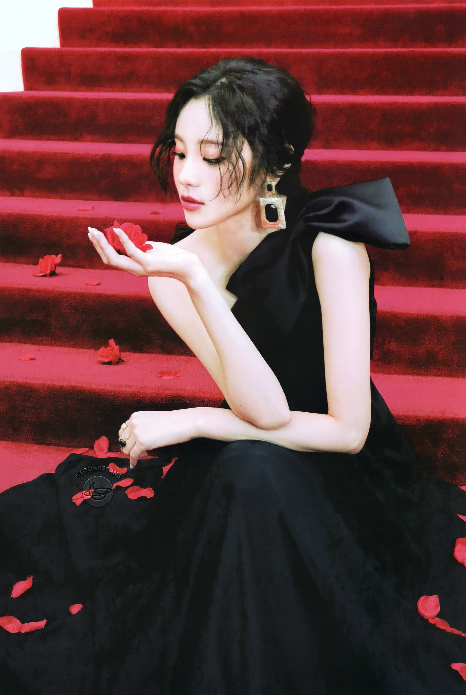

Jinsoul is the seventh member of Loona. She debuted on June 13, 2017 as a member, and released her solo single album "JinSoul" on June 26, 2017.
JinSoul was first teased as a member of LOONA after featuring on ViVi’s “Everyday I Need You”, the B-side of her solo album. Nicknamed the infamous “one-second-girl” for her brief cameo in the music video, fans of the group went wild with speculation about JinSoul’s identity, since LOONA 1/3 was the only sub-unit at the time. It was assumed that JinSoul would be the next member of LOONA, revealed in a similar style as ViVi—first being featured in “Love & Live” and later having her solo release. When the fifth “Who’s Next Girl?” teaser was released, most fans expected the girl to be JinSoul, but were surprised when the member was revealed as Kim Lip.
| JinSoul | |
|---|---|
|  | |
| Full Name | Jung Jin-Sol (정진솔) |
| Birthday | June 13, 1997 (23) |
| Month | June |
| Color | Blue |
| Animal | Blue Betta |
| Sub-Unit | Odd Eye Circle |
| Shape | Circle |
| Zodiac Sign | Gemini |
| Blood Type | B |
JinSoul was a student at BORN Star Training Center in 2014. She performed a cover of Ailee’s “U&I” and a medley of g.o.d songs at their 12th annual concert. In September 2014, she passed her audition for DSP Media and became a trainee there. JinSoul performed a cover of MAMAMOO’s “Um Oh Ah Yeh” in August 2015 while attending the Korean Entertainment Arts School.
JinSoul auditioned for many agencies on her quest to become an idol. Despite finding multiple opportunities through street castings, none followed through. However, sometime in 2016, JinSoul was contacted over Instagram by Polaris-BlockBerry, and became a trainee at Polaris Entertainment through Dream Vocal & Dance Academy. She would later transfer to BlockBerry Creative and train to become a member of LOONA.
JinSoul represents the color blue with her song "Singing in the Rain", and also infamously appears in the "Everyday I Need You" music video. It is also been confirmed by Blockberry Creative that JinSoul has two colors, her main color being blue and her second color being black. The only other person in the LOONAVERSE to have two colors is Choerry. This could represent both of them being some of the more powerful people in the LOONAVERSE, since they can both travel between worlds with JinSoul's teleportation and Choerry's plane switching. Alternatively, JinSoul having black as a colorcould imply that she's been tainted by Olivia and that her color once was pure blue. We see JinSoul with Olivia in Egoist, which shows that JinSoul must be disobeying HeeJin and helping Olivia, however that may be.
JinSoul can use teleportation, or as Blockberry Creative refers to it, "Space Travel". With her ability she can go to certain places, but not to certain people. Teleportation also means that she can travel to other dimensions of the LOONAVERSE, such as to earth to meet ViVi in Everyday I Need You and to Eden to meet Olivia Hye in Egoist. She also represents blue, meaning she has the ability to create things out of blue, such as when she helped Kim Lip create Choerry by mixing their colors.